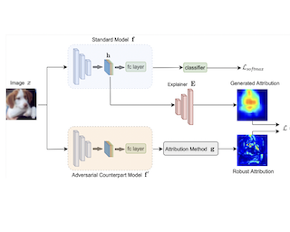
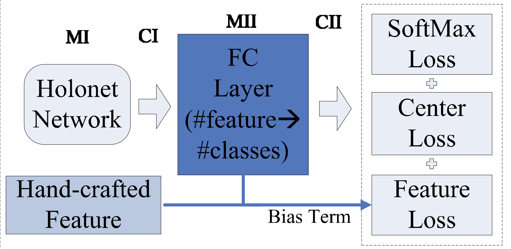

|
Guohang Zeng
I am a final year M.Phil(Master of Philosophy) student at CS department of the University of Melbourne, advised by Prof. James Bailey and Dr. Sarah Erfani. Before comming to University of Melbourne, I got my B.Eng Degree in CS from Shenzhen University in 2016.
My interests mainly focus on deep learning, computer vision and interpretability.
I am currently working at SenseTime as a research intern.
Contact: guohangz[at]student.unimelb.edu.au
Email /
Resume (in Chinese, outdated) /
Google Scholar
|
|
|
Research Projects
I'm currently working on interpretable ML and its connection to adversarail ML. Much of my previous research were about deep learning and its applications on facial regonication.
|
|

|
Generating Deep Network Explanations with Robust Attribution Alignment
Guohang Zeng, Yousef Kowsar, Sarah Erfani, James Bailey
ACML2021 (Long Oral)
We proposed a novel attribution method and achieved good performance with light computational cost in CIFAR10 and TinyImageNet. (to appear)
|
|

|
Hand-crafted Feature Guided Deep Learning for Facial Expression Recognition
Guohang Zeng, Jiancan Zhou, Xijia, Weicheng Xie, Linlin Shen
International Conference on Automatic Face & Gesture Recognition, 2018, PDF
For facial expression recognition task, we proposed a hand-crafted feature guided network with a novel loss function and achieved state-of-the-art result on CK+ dataset.
|
|
|
Joint and collaborative representation with local adaptive convolution feature for face recognition with single sample per person
Meng Yang, Xin Wang, Guohang Zeng, Linlin Shen
Pattern Recognition, 2017, PDF
We proposed a sparse representation-based classifier with deep learning for face recognition with single sample per person. Our method achieved state of the art results on several datasets.
|
Melbourne University Graduate Scholarship, 2018
Shenzhen University Top Scholarship, 2014
Loongson Scholarship, 2013
|
|
{kind=link}